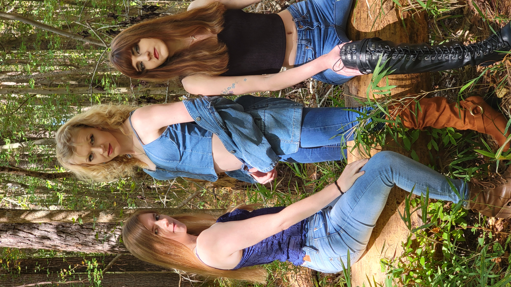

The story
Meet Alive Vocal Group
Alive Vocal Group is a sister trio from Rich Square, North Carolina — Jessica Jefferson, Amanda King, and Emily King — who have been singing together for 20 years. What started as sisters harmonizing at home grew into a sound all their own, one that moves effortlessly across genres: rock, country, R&B, pop, gospel, and everything in between.
Two decades of singing side by side has given them something you can't rehearse — a blend that only sisters share. Whether they're lifting a gospel chorus, leaning into a country ballad, or lighting up an R&B groove, their harmonies carry the warmth of family and the polish of years spent perfecting their craft.
You'll find their music on all major streaming platforms, and you can follow their journey on TikTok, Instagram, Facebook, and YouTube — where they share new music, behind-the-scenes moments, and the everyday joy of three sisters doing what they were born to do.

The sisters
Three Voices, One Family
Jessica Jefferson
Lead vocals. The voice out front — carrying melodies with power and heart, honed over two decades of singing with her sisters.
Amanda King
Vocals. The harmony that lifts every chorus — blending rock edge, country warmth, and gospel fire into the group's signature sound.
Emily King
Vocals. The blend that ties it all together — twenty years of sister harmony you can feel in every note.
